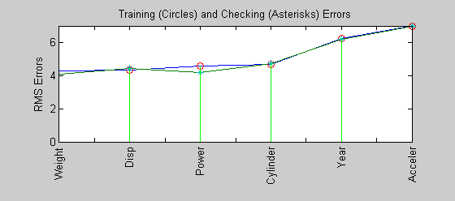
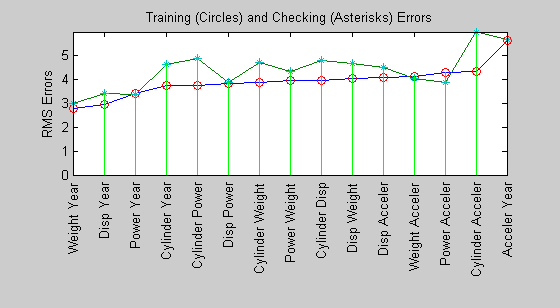
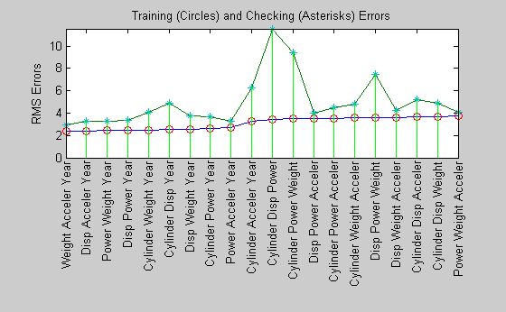
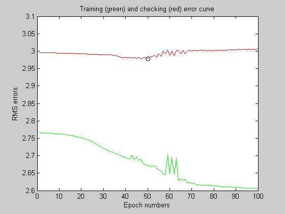
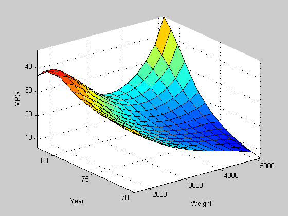
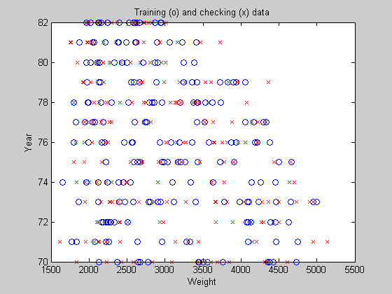

Gas Mileage Prediction
This demo illustrates the prediction of fuel consumption (miles per gallon) for automobiles, using data from previously recorded observations.
Contents
Introduction
Automobile MPG (miles per gallon) prediction is a typical nonlinear regression problem, in which several attributes of an automobile's profile information are used to predict another continuous attribute, the fuel consumption in MPG. The training data is available in the UCI (Univ. of California at Irvine) Machine Learning Repository (http://www.ics.uci.edu/~mlearn/MLRepository.html). It contains data collected from automobiles of various makes and models.
| Input Attributes | Output | ||||||
| Car Name | Number of Cylinders | Displacement | Horsepower | Weight | Acceleration | Year | MPG |
| Chevrolet Chevelle Malibu | 8 | 307 | 130 | 3504 | 12 | 70 | 18 |
| Plymouth Duster | 6 | 198 | 95 | 2833 | 15.5 | 70 | 22 |
| Fiat 128 | 4 | 90 | 75 | 2108 | 15.5 | 74 | 24 |
| Oldsmobile Cutlass Supreme | 8 | 260 | 110 | 4060 | 19 | 77 | 17 |
| Toyota Tercel | 4 | 89 | 62 | 2050 | 17.3 | 81 | 37.7 |
| Honda Accord | 4 | 107 | 75 | 2205 | 14.5 | 82 | 36 |
| Ford Ranger | 4 | 120 | 79 | 2625 | 18.6 | 82 | 28 |
The table shown above is several observations or samples from the MPG data set. The six input attributes are no. of cylinders, displacement, horsepower, weight, acceleration, and model year. The output variable to be predicted is the fuel consumption in MPG. (The automobile's manufacturers and models in the first column of the table are not used for prediction).
Partitioning Data
The data set is obtained from the original data file 'auto-gas.dat'. The dataset is then partitioned into a training set (odd-indexed samples) and a checking set (even-indexed samples).
[data, input_name] = loadgas; trn_data = data(1:2:end, :); chk_data = data(2:2:end, :);
Input Selection
The function exhsrch performs an exhaustive search within the available inputs to select the set of inputs that most influence the fuel consumption. The first parameter to the function specifies the number of input combinations to be tried during the search. Essentially, exhsrch builds an ANFIS model for each combination and trains it for one epoch and reports the performance achieved. In the following example, exhsrch is used to determine the one most influential input attribute in predicting the output.
exhsrch(1, trn_data, chk_data, input_name);
Train 6 ANFIS models, each with 1 inputs selected from 6 candidates... ANFIS model 1: Cylinder --> trn=4.6400, chk=4.7255 ANFIS model 2: Disp --> trn=4.3106, chk=4.4316 ANFIS model 3: Power --> trn=4.5399, chk=4.1713 ANFIS model 4: Weight --> trn=4.2577, chk=4.0863 ANFIS model 5: Acceler --> trn=6.9789, chk=6.9317 ANFIS model 6: Year --> trn=6.2255, chk=6.1693
Figure 1: Every input variable's influence on fuel consumption
The left-most input variable in Figure 1 has the least error or in other words the most relevance with respect to the output.
The plot and results from the function clearly indicate that the input attribute 'Weight' is the most influential. The training and checking errors are comparable, which implies that there is no overfitting. This means we can push a little further and explore if we can select more than one input attribute to build the ANFIS model.
Intuitively, we can simply select 'Weight' and 'Disp' directly since they have the least errors as shown in the plot. However, this will not necessarily be the optimal combination of two inputs that result in the minimal training error. To verify this, we can use exhsrch to search for the optimal combination of 2 input attributes.
input_index = exhsrch(2, trn_data, chk_data, input_name);
Train 15 ANFIS models, each with 2 inputs selected from 6 candidates... ANFIS model 1: Cylinder Disp --> trn=3.9320, chk=4.7920 ANFIS model 2: Cylinder Power --> trn=3.7364, chk=4.8683 ANFIS model 3: Cylinder Weight --> trn=3.8741, chk=4.6764 ANFIS model 4: Cylinder Acceler --> trn=4.3287, chk=5.9625 ANFIS model 5: Cylinder Year --> trn=3.7129, chk=4.5946 ANFIS model 6: Disp Power --> trn=3.8087, chk=3.8594 ANFIS model 7: Disp Weight --> trn=4.0271, chk=4.6349 ANFIS model 8: Disp Acceler --> trn=4.0782, chk=4.4890 ANFIS model 9: Disp Year --> trn=2.9565, chk=3.3905 ANFIS model 10: Power Weight --> trn=3.9310, chk=4.2974 ANFIS model 11: Power Acceler --> trn=4.2740, chk=3.8738 ANFIS model 12: Power Year --> trn=3.3796, chk=3.3505 ANFIS model 13: Weight Acceler --> trn=4.0875, chk=4.0095 ANFIS model 14: Weight Year --> trn=2.7657, chk=2.9954 ANFIS model 15: Acceler Year --> trn=5.6242, chk=5.6481
Figure 2: All two input variable combinations and their influence on fuel consumption
The results from exhsrch indicate that 'Weight' and 'Year' form the optimal combination of two input attributes. The training and checking errors are getting distinguished, indicating the outset of overfitting. It may not be prudent to use more than two inputs for building the ANFIS model. We can test this premise to verify it's validity.
exhsrch(3, trn_data, chk_data, input_name);
Train 20 ANFIS models, each with 3 inputs selected from 6 candidates... ANFIS model 1: Cylinder Disp Power --> trn=3.4446, chk=11.5329 ANFIS model 2: Cylinder Disp Weight --> trn=3.6686, chk=4.8923 ANFIS model 3: Cylinder Disp Acceler --> trn=3.6610, chk=5.2384 ANFIS model 4: Cylinder Disp Year --> trn=2.5463, chk=4.9001 ANFIS model 5: Cylinder Power Weight --> trn=3.4797, chk=9.3761 ANFIS model 6: Cylinder Power Acceler --> trn=3.5432, chk=4.4804 ANFIS model 7: Cylinder Power Year --> trn=2.6300, chk=3.6300 ANFIS model 8: Cylinder Weight Acceler --> trn=3.5708, chk=4.8376 ANFIS model 9: Cylinder Weight Year --> trn=2.4951, chk=4.0434 ANFIS model 10: Cylinder Acceler Year --> trn=3.2698, chk=6.2616 ANFIS model 11: Disp Power Weight --> trn=3.5879, chk=7.4916 ANFIS model 12: Disp Power Acceler --> trn=3.5395, chk=3.9953 ANFIS model 13: Disp Power Year --> trn=2.4607, chk=3.3563 ANFIS model 14: Disp Weight Acceler --> trn=3.6075, chk=4.2318 ANFIS model 15: Disp Weight Year --> trn=2.5617, chk=3.7860 ANFIS model 16: Disp Acceler Year --> trn=2.4149, chk=3.2480 ANFIS model 17: Power Weight Acceler --> trn=3.7884, chk=4.0479 ANFIS model 18: Power Weight Year --> trn=2.4371, chk=3.2848 ANFIS model 19: Power Acceler Year --> trn=2.7276, chk=3.2580 ANFIS model 20: Weight Acceler Year --> trn=2.3603, chk=2.9152
Figure 3: All three input variable combinations and their influence on fuel consumption
The plot demonstrates the result of selecting three inputs, in which 'Weight', 'Year', and 'Acceler' are selected as the best combination of three input variables. However, the minimal training (and checking) error do not reduce significantly from that of the best 2-input model, which indicates that the newly added attribute 'Acceler' does not improve the prediction much. For better generalization, we always prefer a model with a simple structure. Therefore we will stick to the two-input ANFIS for further exploration.
We then extract the selected input attributes from the original training and checking datasets.
close all;
new_trn_data = trn_data(:, [input_index, size(trn_data,2)]);
new_chk_data = chk_data(:, [input_index, size(chk_data,2)]);
Training the ANFIS Model
The function exhsrch only trains each ANFIS for a single epoch in order to be able to quickly find the right inputs. Now that the inputs are fixed, we can spend more time on ANFIS training (100 epochs).
The genfis1 function generates a initial FIS from the training data, which is then finetuned by ANFIS to generate the final model.
in_fismat = genfis1(new_trn_data, 2, 'gbellmf'); [trn_out_fismat trn_error step_size chk_out_fismat chk_error] = ... anfis(new_trn_data, in_fismat, [100 nan 0.01 0.5 1.5], [0,0,0,0], new_chk_data, 1);
ANFIS returns the error with respect to training data and checking data in the list of its output parameters. The plot of the errors provides useful information about the training process.
[a, b] = min(chk_error); plot(1:100, trn_error, 'g-', 1:100, chk_error, 'r-', b, a, 'ko'); title('Training (green) and checking (red) error curve'); xlabel('Epoch numbers'); ylabel('RMS errors');
Figure 4: ANFIS training and checking errors
The plot above shows the error curves for 100 epochs of ANFIS training. The green curve gives the training errors and the red curve gives the checking errors. The minimal checking error occurs at about epoch 45, which is indicated by a circle. Notice that the checking error curve goes up after 50 epochs, indicating that further training overfits the data and produces worse generalization
ANFIS vs Linear Regression
A good exercise at this point would be to check the performance of the ANFIS model with a linear regression model.
The ANFIS prediction can be compared against a linear regression model by comparing their respective RMSE (Root mean square) values against checking data.
% Performing Linear Regression N = size(trn_data,1); A = [trn_data(:,1:6) ones(N,1)]; B = trn_data(:,7); coef = A\B; % Solving for regression parameters from training data Nc = size(chk_data,1); A_ck = [chk_data(:,1:6) ones(Nc,1)]; B_ck = chk_data(:,7); lr_rmse = norm(A_ck*coef-B_ck)/sqrt(Nc); % Printing results fprintf('\nRMSE against checking data\nANFIS : %1.3f\tLinear Regression : %1.3f\n', a, lr_rmse);
RMSE against checking data ANFIS : 2.978 Linear Regression : 3.444
It can be seen that the ANFIS model outperforms the linear regression model.
Analyzing the ANFIS Model
The variable chk_out_fismat represents the snapshot of the ANFIS model at the minimal checking error during the training process. The input-output surface of the model is shown in the plot below.
chk_out_fismat = setfis(chk_out_fismat, 'input', 1, 'name', 'Weight'); chk_out_fismat = setfis(chk_out_fismat, 'input', 2, 'name', 'Year'); chk_out_fismat = setfis(chk_out_fismat, 'output', 1, 'name', 'MPG'); % Generating the FIS output surface plot gensurf(chk_out_fismat);
Figure 5: Input-Output surface for trained FIS
The input-output surface shown above is a nonlinear and monotonic surface and illustrates how the ANFIS model will respond to varying values of 'weight' and 'year'.
Limitations and Cautions
We can see some spurious effects at the far-end corner of the surface. The elevated corner says that the heavier an automobile is, the more gas-efficient it will be. This is totally counter-intuitive, and it is a direct result from lack of data.
plot(new_trn_data(:,1), new_trn_data(:, 2), 'bo', ... new_chk_data(:,1), new_chk_data(:, 2), 'rx'); xlabel('Weight'); ylabel('Year'); title('Training (o) and checking (x) data');
Figure 6: Weight vs Year plot showing lack of data in the upper-right corner
This plot above shows the data distribution. The lack of training data at the upper right corner causes the spurious ANFIS surface mentioned earlier. Therefore the prediction by ANFIS should always be interpreted with the data distribution in mind.